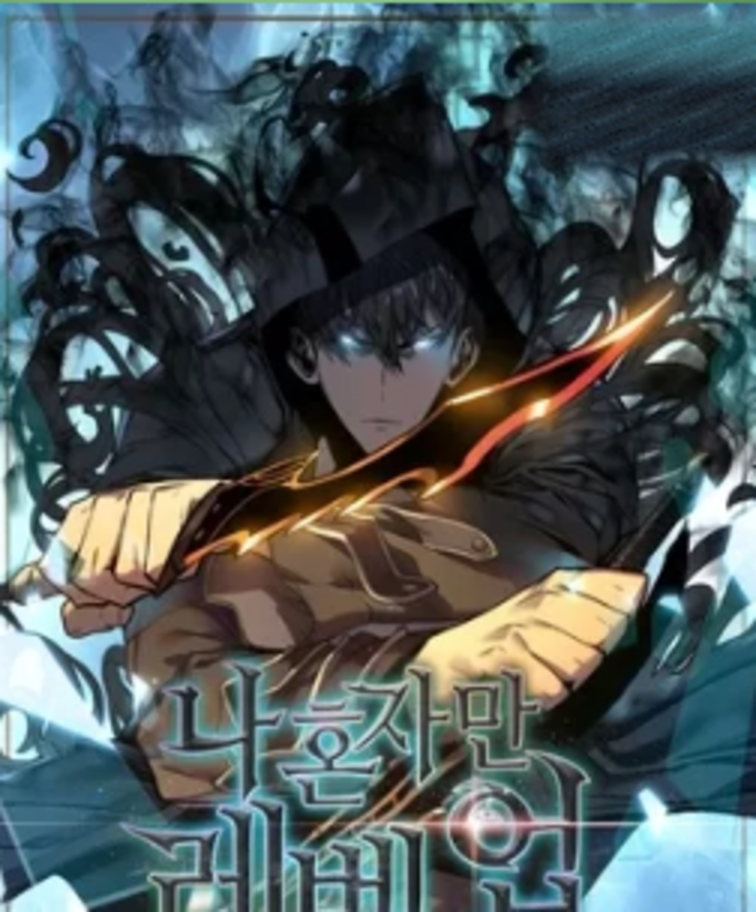

★ 9.00Hace 10 años, después de que “La Puerta” conectara el mundo real con el mundo de los monstruos se abriera, algunas de las personas recibieron el poder de cazar los monstruos que vivían al otro lado de esta. Se les conoce como “cazadores”. Sin embargo, no todos los cazadores son poderosos. Sung Jin-Woo, un cazador de rango E, es alguien que tiene que arriesgar su vida en humildes calabozos, lo llaman el “más débil del mundo”…. Hasta que un día, tras una incursión doble de rango D, Jin-Woo obtiene un poder misterioso: el Sistema, que le permite subir de nivel sin límites. De la presa más frágil al Monarca de las Sombras.